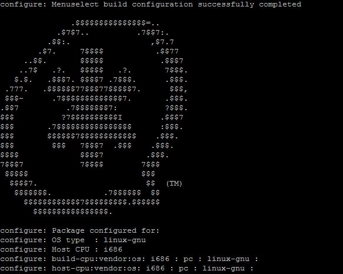
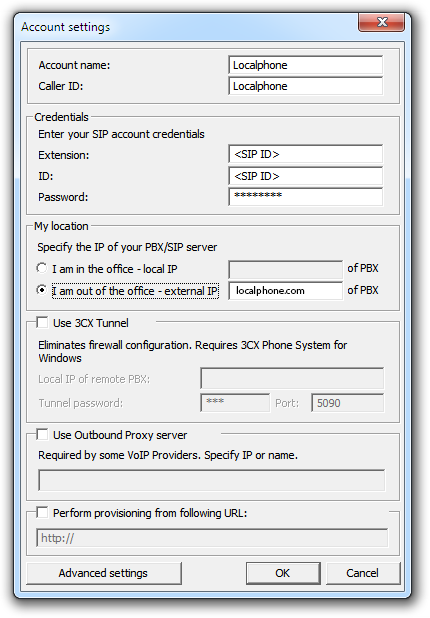
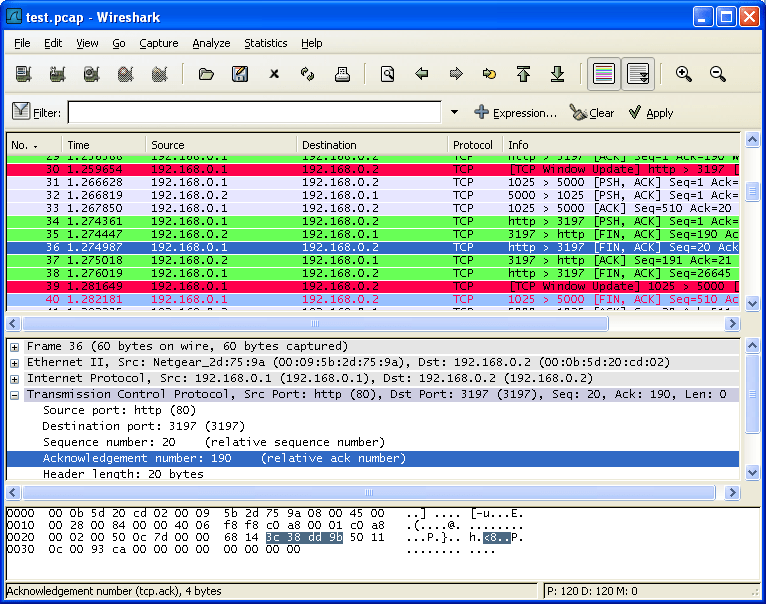

📍 Présentation du projet
Le projet consistait à mettre en œuvre une infrastructure de téléphonie IP sécurisée à l'aide de deux systèmes : Asterisk et 3CX. L'objectif était de comprendre l'installation, la configuration et la gestion de ces plateformes dans un environnement sécurisé. Plusieurs machines virtuelles ont été créées sur Windows 10, connectées à des téléphones physiques et à des appareils mobiles pour tester les communications. L'analyse des échanges a été réalisée avec l'outil Wireshark afin d'étudier les trames réseau et les communications vocales en temps réel.
🧪 Activités réalisées
- Création de machines virtuelles Windows 10 avec 3CX installé pour gérer les appels VoIP.
- Connexion d'un téléphone portable (ancien modèle) à la plateforme 3CX, permettant de passer et recevoir des appels.
- Configuration du serveur Asterisk sur Debian, incluant l'installation sans interface graphique et la configuration des utilisateurs SIP.
- Analyse des appels via Wireshark, pour observer les trames réseau et comprendre comment les données voix sont transmises.
- Simulation d'une attaque eavesdropping en utilisant ARP spoofing pour tester la résistance du système aux attaques de type écoute clandestine.
- Test des appels internes et externes entre les machines virtuelles et les téléphones mobiles en utilisant 3CX et Asterisk.
- Configuration d’un plan d'appel sur Asterisk et 3CX pour établir des règles de numérotation et tester la communication entre différents contextes (Finance et Compta).
- Implémentation de contre-mesures de sécurité, comme le chiffrement TLS et l’analyse des logs pour garantir la confidentialité des communications.
🔐 Sécurisation et contre-mesures
- Utilisation du protocole TLS pour chiffrer les échanges entre le serveur Asterisk, 3CX et les téléphones.
- Surveillance réseau avec Wireshark pour détecter les tentatives d'attaque et analyser la structure des paquets VoIP.
- Déploiement d'une solution de filtrage réseau pour bloquer les communications non autorisées.
- Gestion des utilisateurs et des permissions pour éviter les accès non sécurisés aux systèmes VoIP.
- Tests de résistance du système en simulant une attaque ARP spoofing pour observer l'impact de cette vulnérabilité sur les communications.
🖼️ Galerie d'images
Voici quelques captures d'écran et photos liées au projet de téléphonie IP avec Asterisk et 3CX :



📊 Résultats obtenus
✅ Appels internes fonctionnels entre contextes Finance et Compta via 3CX et Asterisk.
📞 Téléphones mobiles et machines virtuelles connectés et capables de passer des appels.
🧠 Observation en temps réel des trames VoIP via Wireshark, comprenant la capture de paquets SIP et RTP.
🛡️ Mise en place de contre-mesures avec chiffrement des échanges, bloquant ainsi les attaques de type eavesdropping.
🔧 Développement de compétences avancées en configuration VoIP, analyse réseau et sécurité informatique.
🏆 Simulation d'attaque réussie avec ARP spoofing, mais l'attaque a été bloquée grâce au chiffrement TLS et aux filtres réseau.
📚 Ressources et documentation